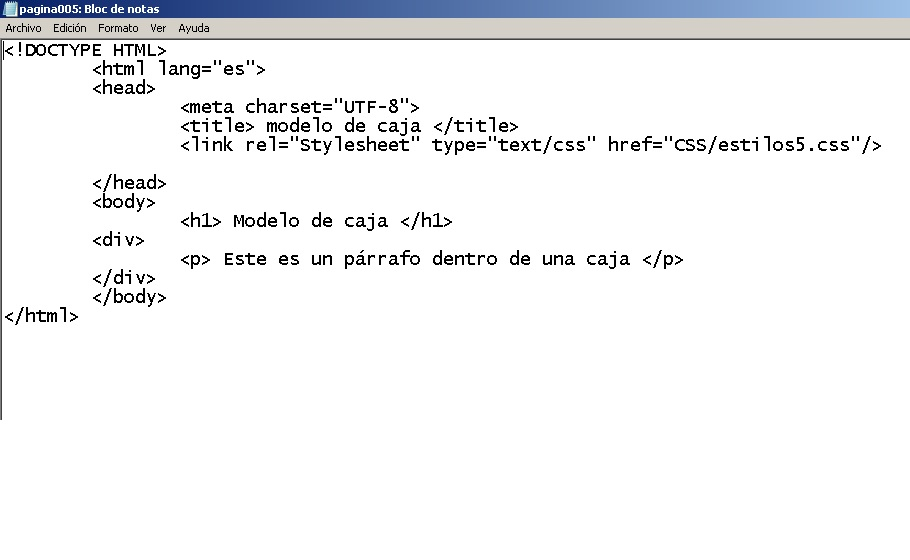

En esta pagina web realizamos un cuadro que muestra colores con su nombre. Este trabajo mostraba en excibición la manera que se ponia el color en cuadros de muestra y en sus nombres

En esta pagina web, utilizamos encabezados desde h1 hasta distintos h3. Utilizamos el "div", y dentro de el escribimos parrafos con cursivas, negritas, subrayados e.t.c... Hicimos uso de los elementos de lista, una ordenaday otra no. Sin olvidar que utilizamos dos div con una imagen cada uno de llos. Para realizar esta pagina nos basamos en una receta de tacos de birria originales de Jalisco.
En esta pagina web realizamos un cuadro que muestra colores con su nombre. Este trabajo mostraba en excibición la manera que se ponia el color en cuadros de muestra y en sus nombres
Para realizar esta página web utilizamos por primera vez "div" y vimos sus usos interiores los cuáles incluyen: background, width, height, margin, paddin, border y display, los cuáles sirven para modificar tamaños, grosor, color, etc.
Para realizar esta página web hicimos caso a las indicaciones del preofesor las cuáles fueron: realizar una ´página web como normalmente las hacemos, pero para ello no devía contener las sección de body para así crear un modelo de una página web en blanco
Al realizar esta página web se pusó a prueba el método "div" de esta forma se comprobaron sus características notablemente visibles, junto con párrafos, h1..., br, entre otros aspectos de la página.
En la siguiente págin podrás observar los diferentes estilos de fuente que en su contenido se aprecia una manera de alinear, h1..., p, b, i, u, hr, ul, li, etc...
Esta página web se realizó como base de ejemplo de como esta estructurada con sus características basícas.
es esta actividad estabamos realizando una actividad (notas) el cual eran analizar y conocer el concepto de archivo y sus tipos
en esta actividad estuvimos analizando todos los elementos de las paginas web como sus caracteres especiales, idiomas, iconos, etc.
en esta actividad vimos por primera vez el tema CSS el cual es un lenguaje central de internet, vimos su estructura y sus caracteristicas.
aqui realizamos nuestra pagina web basada en las instrucciones de una actividad que contenga estios de fuente.
.
6Esta página we se realizó como base de ejemplo de como esta estructurada con sus características basícas.

7Esta página we se realizó como base de ejemplo de como esta estructurada con sus características basícas.
8Esta página we se realizó como base de ejemplo de como esta estructurada con sus características basícas.
9Esta página we se realizó como base de ejemplo de como esta estructurada con sus características basícas.


10Esta página we se realizó como base de ejemplo de como esta estructurada con sus características basícas.